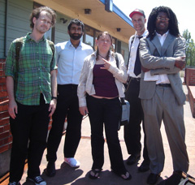

Submitted on Mon, 07/31/2006 - 12:16pm
 We need your solidarity now. Daniel Gross, an organizer in the IWW Starbucks Workers Union, is being "investigated" by the company over a protest he and his co-workers participated in to support another IWW barista, Evan Winterscheidt. Evan was suspended and faced termination because of his union activity and his fellow union members went to protest outside his store to demand that he not be fired. Pending the outcome of Starbucks' "investigation" into Daniel's participation in this act of mutual aid, Starbucks will decide whether or not to fire him. The decision could take place any day so please take action now.
We need your solidarity now. Daniel Gross, an organizer in the IWW Starbucks Workers Union, is being "investigated" by the company over a protest he and his co-workers participated in to support another IWW barista, Evan Winterscheidt. Evan was suspended and faced termination because of his union activity and his fellow union members went to protest outside his store to demand that he not be fired. Pending the outcome of Starbucks' "investigation" into Daniel's participation in this act of mutual aid, Starbucks will decide whether or not to fire him. The decision could take place any day so please take action now.
Submitted on Mon, 07/24/2006 - 1:26am
 We deserve it! Why? It's a sector of industry often overlooked as insignificant, but millions of people work hard within it. As more and more people are forced to work in service jobs the working poor are becoming increasingly poorer. It is time to come together and take what we deserve.
We deserve it! Why? It's a sector of industry often overlooked as insignificant, but millions of people work hard within it. As more and more people are forced to work in service jobs the working poor are becoming increasingly poorer. It is time to come together and take what we deserve.
- The Landmark Cinema workers with lWW are attempting to negotiate a contract with Landmark to gain reasonable and appropriate working conditions.
- lWW will provide the most efficient structure for carrying on our daily struggle for better conditions and better pay.
- The working class deserves fair treatment including access to medical/vision/dental healthcare and reasonable compensation, you know, a living wage. No long term employee should be denied raises after years of service.
- No employee working on Christmas day should be paid less than time and a half.
- No job should be considered too trivial for a full time employee to have access to healthcare.
Our sister theater, The Kendell in Boston, has been negotiating for nine months and has made limited progress towards a fair contract. The Landmark Shattuck Cinema workers voted overwhelmingly for the Union on June 16th 2006. We demand a fair contract now!
Submitted on Fri, 07/21/2006 - 4:24am
By IWW Members Joe and Wes.
Oakland - IWW memebers including Sharon, Jason and Bryan from Shattuck Cinemas and Bay Area IWW members Harjit and Leo met for four hours on Thursday to present contract proposals to Landmark corporate hired gun attorney Tom Pavone.
Landmark intends to fight the union every inch of the way, so it is not surprising that they agreed to nothing the union proposed on Thursday. however, pavone wants to make some money.
Dragging things out is his way of doing that. We, the workers intend to reply by holding fast to our demands and demanding that they be met now. Why should they listen to us?
Answer, because the workers are solid and have asked for and received community support from all over the San Francisco Bay Area. we need to build on the support we have and increase it everyday.
Submitted on Fri, 07/21/2006 - 2:05am
By Melissa Meinzer - Pittsburgh City Paper, July 20, 2006
 For many workers at the East End Food Co-op, the road to union recognition gets longer with every step they trudge. Although union supporters say a majority of workers have voted in favor of a union, the co-op is declining to recognize the election, in part because of a rival union effort begun by a former manager. And there is another source of controversy: the co-op’s hiring of Braun Consulting — an organization seen by many employees as anti-union.
For many workers at the East End Food Co-op, the road to union recognition gets longer with every step they trudge. Although union supporters say a majority of workers have voted in favor of a union, the co-op is declining to recognize the election, in part because of a rival union effort begun by a former manager. And there is another source of controversy: the co-op’s hiring of Braun Consulting — an organization seen by many employees as anti-union.
Workers at the Point Breeze natural foods outlet, who have been trying unsuccessfully to unionize for years, thought that their most recent push would be enough to have management recognize the Industrial Workers of the World as their union. They say that more than half of the 55-person staff signed union authorization cards between May 19 and June 7. While members of the Workers Committee, the employee group heading up the IWW push, won’t reveal just how many signed cards they have, committee member Evan Wolfson calls it “a clear majority.”
Submitted on Wed, 07/19/2006 - 1:37pm
 In the latest attempt to scare workers from joining the IWW Starbucks Workers Union, Starbucks has fired two union members in two different stores. Evan Winterscheidt, a 2 year employee at 14th st and 6th ave and Charles Fostrom at 57th st and Lexington ave. The Union demands the immediate reinstatement of both workers and an end to the illegal anti-union activities.
In the latest attempt to scare workers from joining the IWW Starbucks Workers Union, Starbucks has fired two union members in two different stores. Evan Winterscheidt, a 2 year employee at 14th st and 6th ave and Charles Fostrom at 57th st and Lexington ave. The Union demands the immediate reinstatement of both workers and an end to the illegal anti-union activities.
The IWW Starbucks Workers Union believes that these two firings are part of an on going anti-union campaign and is filing more unfair labor practices against the company. Although Starbucks has relentlessly tried to intimidate NYC baristas from joining the union, workers continue to organize for higher wages, consistent hours, respect at work and a better life on and off the job.